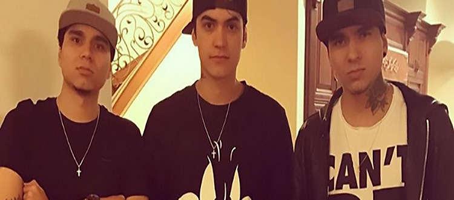
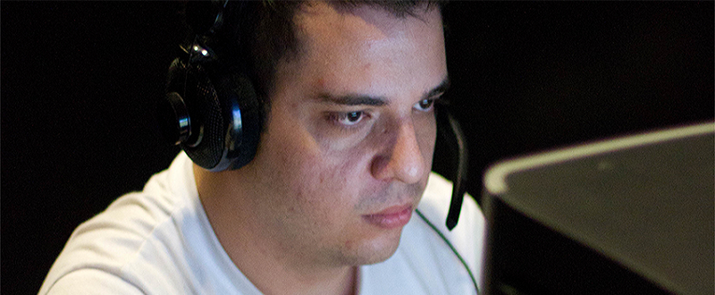
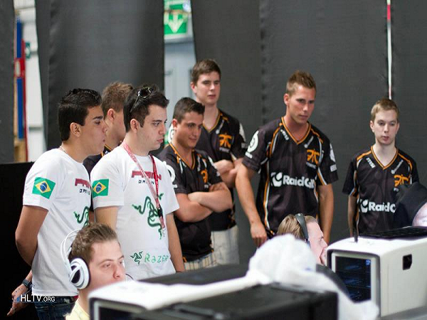
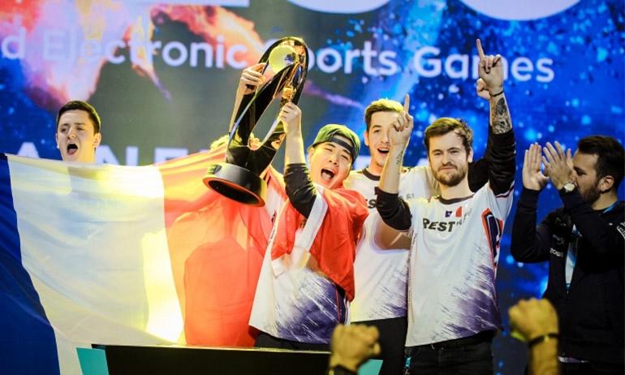
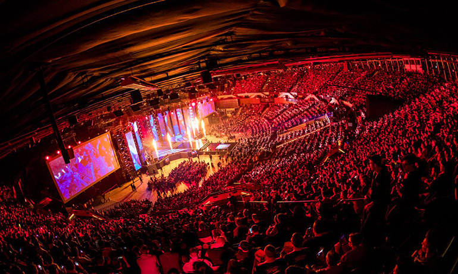
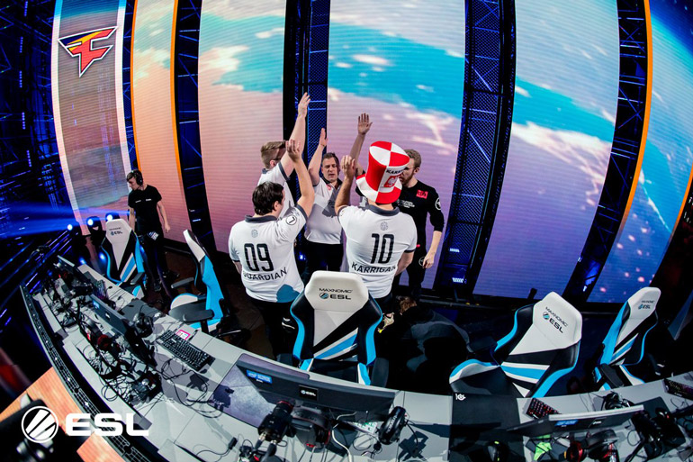
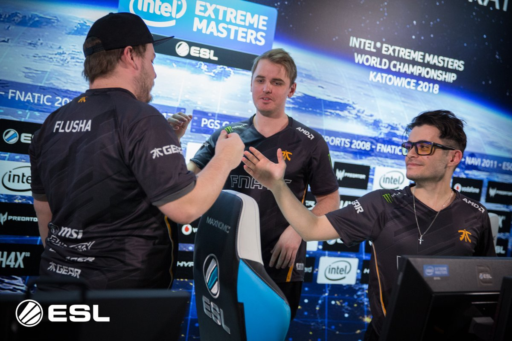

O atleta de Counter Strike:Global Offensive, Bruno "bit" Lima, que atualmente atua pela "NTC", anunciou nesta sexta-feira (9), que a sua equipe está retornando a Europa, para realizar mais um bootcamp, enquanto os seus vistos para os Estados Unidos ficam prontos. A informação foi revelado no Twitter do jogador, que também afirmou que o time jogaria alguns campeonatos por lá.
"Another day another chance. Domingo estaremos embarcando para Alemanha, iremos ficar treinando por um período e jogaremos alguns campeonatos provavelmente até resolver os vistos e voltar para o EUA." - disse bit1 em seu twitter oficial.
Ainda sem uma organização oficialmente definida, rumores fortíssimos apontam que a escalação brasileira tem como destino certo a SK Gaming, que está perto de perder sua lineup atual para a Immortals, que por sua vez tem planos de reviver a lendária tag Made in Brazil (MiBR). E como pode-se notar na postagem de bit, ele e seus companheiros irão ficar mais especificamente na Alemanha, que curiosamente (ou não), é onde fica a sede da própria SK.
Atualmente, a única competição que a NTC disputa no momento é a MDL ESEA norte-americana. Por lá, eles se encontram em 17º lugar, dentre vinte e quatro times, com cinco vitórias e seis derrotas. Vale citar também que os brasileiros ainda tem um número relativamente baixo de jogos em relação a outros. Enquanto algumas equipes já fizeram de quatorze a quinze partidas, eles disputaram apenas onze.
Uma reportagem veiculada recentemente no G1, portal de notícias da Globo, pegou a muitos acompanhantes do cenário brasileiro de Counter Strike 1.6 de surpresa. Isso porque Frederico "atx" Maia, um dos maiores representantes da cena carioca naquela época, que jogou por muito tempo pela tag Team Authority, foi detido no próprio estado do Rio de Janeiro.
Atx jogou CS 1.6 competitivamente por muitos anos. Era figura carimbada nas WCG Brasil e estava constantemente nos melhores times do Rio. Ele também jogou ao lado de nomes como Felipe "brTT" Gonçalves (hoje no League of Legends), Lorenzo "lrz" Araujo (ex-INTZ), Felippe "felippe1" Martins (ex-coach da Luminosity e grande jogador de Crossfire), Raphael "cogu" Camargo (lenda do CS 1.6), entre outros. Até mesmo no CS:GO, atx chegou a participar de ótimas lines no começo do cenário brasileiro, como a PaiN Gaming, mas não levou o jogo para frente por muito tempo.
Já nesta segunda-feira (12), ele aparece algemado em uma reportagem do G1, com a alegação de tráfico de drogas. Os policiais encontraram no seu apartamento e no do irmão metanfetamina, LSD, haxixe, maconha e também balanças e cadernos, cheios de anotações e contas, as quais se referiam ao comércio ilegal de drogas que eles realizavam.
Além do envolvimento com drogas ilícitas, a reportagem também fala de um homicídio no meio de toda esta história. Porém, ao que tudo indica, o ex-jogador não tem envolvimento nenhum com este caso. Apenas com o tráfico. Uma notícia realmente triste para quem o acompanhava na época "old school" do Counter-Strike, e também para os seus ex-companheiros de time, que sem dúvidas, não gostariam de ver o amigo em uma situação complicada dessas.
Mais informações sobre o caso, você confere na matéria do G1, clicando Aqui
FonteNa manhã deste sábado (03) foram divulgados os grupos da WESG (World Electronic Sports Games) 2017. O torneio terá a presença de duas equipes brasileiras, SK Gaming e Team oNe, e será realizado em Haikou, na China. A competição conta com uma premiação total de 1 milhão e 500 mil de dólares, maior que a do Major.
A TeamOne, que avançou pelo classificatório sul-americano, caiu no grupo A e terá pela frente MVP PK, subtLe e NSPR. Já a SK Gaming, está no grupo D, tendo a companhia de BIG, Rússia e New4.
Durante a fase de grupos, os jogos serão realizados no formato MD1, com as duas melhores equipes de cada grupo avançando para uma segunda fase de grupos.
Confira abaixo todos os grupos do torneio:
| Grupo A | Grupo B | Grupo C | Grupo D | Grupo E | Grupo F | Grupo G | Grupo H |
|---|---|---|---|---|---|---|---|
| MVP PK | godsent | ViCi | SK Gaming | Ucrânia | Space Soldiers | Cloud9 | Order |
| subLe | AGO | Bélgica | BIG | Team EnVyUs | Recca | The Onliners | NOREG |
| TeamOne | swole Patrol | Parallax | Rússia | Bravado | Isurus | SZ Absolute | EMC |
| NSPR | B.O.O.T-d[S] | Wololos | New4 | Viva Alegria | Limitless | fnatic | MAX |
Foram realizadas hoje (03) as semifinais do Intel Extreme Masters Katowice, torneio que está sendo realizado na Polônia. No jogo de abertura, tivemos a FaZe Clan enfrentando a equipe dinamarquesa da Astralis. Logo em seguida, foi a vez do duelo entre a Team Liquid e os suecos da Fnatic.
Buscando garantir vaga em outra final, a FaZe foi para cima dos rivais. Escolhendo o mapa da Cache, o time fez uma boa primeira metade, garantindo a vitória por 9 a 6. Mostrando um bom controle de mapa e contando com uma boa atuação de GuardiaN e NiKo, os europeus fizeram uma segunda metade segura e assim levaram o primeiro mapa do confronto por 16 a 10.
No mapa de escolha da Astralis, foi o misto europeu que começou melhor. Atuando como CT, a equipe conseguia jogar bem e fazia uma primeira metade segura. Porém, com uma boa reação no final, os dinamarqueses deixaram a partida em aberto (9 a 6).
Device e companhia foram para cima, buscando levar o confronto para o terceiro mapa, no entanto, não tiveram sucesso. Tendo problemas em administrar a economia e envolvidos pelo jogo agressivo da FaZe, acabaram sendo derrotados por 16 a 10, sendo eliminados da competição.
A FaZe Clan agora aguarda o vencedor do confronto entre Team Liquid e fnatic, para saber quem será o seu próximo adversário, em final que ocorre amanhã as 13:00 hrs.
Na segunda semifinal do dia, tivemos o encontro entre Team Liquid e fnatic.
Os norte-americanos escolheram o mapa da Inferno, e começaram muito bem. Atuando de CT, a equipe venceu a primeira metade por 9 a 6. Porém, mostrando uma defesa eficiente e sólida e eficiente, os suecos conseguiram virar o placar e venceram o jogo por 16 a 13, abrindo vantagem na MD3.
Em seu mapa de escolha, a fnatic começou atuando do lado TR. Tendo um excelente controle de mapa e garantindo abates importantes, a equipe sueca garantiu a vantagem parcial, vencendo o half por 10 a 5.
Se aproveitando da vantagem construída na primeira metade e principalmente da fragilidade ofensiva da Liquid, os suecos selaram a vitória tranquilamente por 16 a 7, conquistando assim a segunda vaga para a grande final.
FaZe Clan e Fnatic se enfrentam amanhã (04) as 13:00 hrs, horário de brasília, em final MD5.
 Fonte